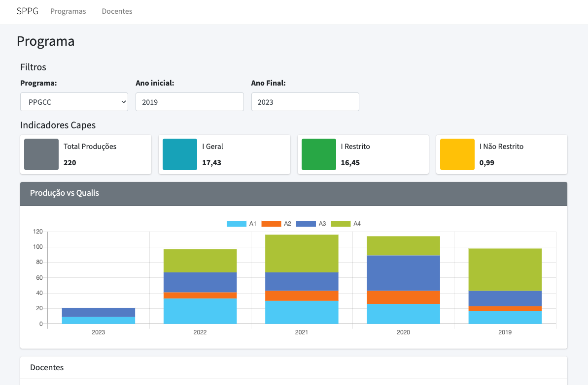

name: inverse class: center, middle, main-title # Componentizando a interface Laboratório de Programação --- # Objetivo - Portar o protótipo para React - Encontrar e contruir componentes > Tendo como regra a reusabilidade --- #Instalar dependências - Criar o projeto: `create-react-app <nome>` - AdminLTE: `npm install admin-lte --save` - `npm i admin-lte` - versão react `npm i adminlte-2-react` - Chart.js: `npm install --save react-chartjs-2 chart.js` - `npm i chart.js` --- # Remova do projeto arquivos desnecessários - App.css - Index.css - Logo - ... --- # Adicione no App.js - Ele funciona como nossa base - Dependências comuns às páginas ```jsx import 'admin-lte/dist/css/adminlte.min.css' import 'admin-lte/plugins/fontawesome-free/css/all.min.css' ``` --- ## Vamos começar pela Home <center>  </center> --- ##Home: dê uma olhada no HTML - crie um componente `home.js` no projeto, dentro da pasta `src/views` - inicialize a configuração do componente ```jsx export default function Home () { return ( <div> </div> ); } ``` --- ##Home: sinalize a App.js - Importe o componente em App.js para que possa ser renderizado ```jsx import 'admin-lte/dist/css/adminlte.min.css' import 'admin-lte/plugins/fontawesome-free/css/all.min.css' import 'admin-lte/plugins/datatables-bs4/css/dataTables.bootstrap4.min.css' import 'admin-lte/plugins/datatables-responsive/css/responsive.bootstrap4.min.css' import 'admin-lte/plugins/datatables-buttons/css/buttons.bootstrap4.min.css' import Home from './views/Home'; const root = ReactDOM.createRoot(document.getElementById('root')); root.render( <React.StrictMode> <Home /> </React.StrictMode> ); ``` --- ##Home: Copie o html e vá `componentizando` - Legal indentificar componentes como: - navbar - content header - content - card - gráfico - tabela - Trocas comuns: - `className` no lugar de `class` - em style, usar `{}`. Exemplo: `style={{width: '100%'}}` ao invés de `style="width: '100%'"` - no `return` sempre deve existir um nó principal, se não houver adicione um vazio `<> </>` --- ##Navbar ```jsx export default function Navbar() { return ( <nav className="main-header navbar navbar-expand-md navbar-light navbar-white"> <div className="container"> <a href="home.html" className="navbar-brand"> <span className="brand-text font-weight-light">SPPG</span> </a> <button className="navbar-toggler order-1" type="button" data-toggle="collapse" data-target="#navbarCollapse" aria-controls="navbarCollapse" aria-expanded="false" aria-label="Toggle navigation"> <span className="navbar-toggler-icon"></span> </button> <div className="collapse navbar-collapse order-3" id="navbarCollapse"> <ul className="navbar-nav"> <li className="nav-item"> <a href="home.html" className="nav-link">Programas</a> </li> <li className="nav-item"> <a href="docente.html" className="nav-link">Docentes</a> </li> </ul> </div> </div> </nav> ); } ``` --- ##Header da Página ```jsx export default function Header({titulo}) { return ( <div className="content-header"> <div className="container"> <div className="row mb-2"> <div className="col-sm-6"> <h1 className="m-0"> {titulo} </h1> </div> </div> </div> </div> ); } ``` --- ##Painel de Filtros (parte 1) ```JSX export default function Filtros() { return ( <> <h5 className="mb-2">Filtros</h5> <form action="#"> <div className="row"> <div className="col-md-10"> <div className="row"> <div className="col-3"> <div className="form-group"> <label>Programa:</label> <select className="form-control" style={{width: '100%'}}> <option selected>PPGCC</option> <option>DCCMAPI</option> </select> </div> </div> ... ``` --- ##Painel de Filtros (parte 2) ```JSX <div className="col-3"> <div className="form-group"> <label>Ano inicial:</label> <input className="form-control" value="2019"/> </div> </div> <div className="col-3"> <div className="form-group"> <label>Ano Final:</label> <input className="form-control" value="2023"/> </div> </div> </div> </div> </div> </form> </> ); } ``` --- ## Atualize a Home ```JSX export default function Home () { return ( <div className="wrapper"> <Navbar /> <div className="content-wrapper"> <Header titulo="Programa" /> {/*<!-- Main content -->*/} <div className="content"> <div className="container"> <div className="container-fluid"> <Filtros /> </div> </div> </div> </div> </div> ); } ``` --- ##Resta ainda ... - Indicadores - Gráfico - Tabela --- ## Indicadores - Possui várias caixas `Info-box` --> subcomponente ```JSX function InfoBox({titulo, valor, bg, icon}){ return ( <div className="col-md-3 col-sm-6 col-12"> <div className="info-box"> <span className={"info-box-icon "+ bg}> <i className={"far " + icon}></i> </span> <div className="info-box-content"> <span className="info-box-text">{titulo}</span> <span className="info-box-number">{valor}</span> </div> </div> </div> ); } ``` --- ## Indicadores - Combina as várias `Info-box` ```JSX export default function Indicadores() { return ( <> <h5 className="mb-2">Indicadores Capes</h5> <div className="row"> <InfoBox titulo="Total Produções" valor="220" bg="bg-gray" icon="fa-copy" /> <InfoBox titulo="I Geral" valor="17,43" bg="bg-info" icon="fa-envelope" /> <InfoBox titulo="I Restrito" valor="16,45" bg="bg-success" icon="fa-flag" /> <InfoBox titulo="I Não Restrito" valor="0,99" bg="bg-warning" icon="fa-copy" /> </div> </> ); } ``` --- ## Gráfico - Vamos usar a versão REACT direto, por ele já gerenciar os scripts - <a href="https://react-chartjs-2.js.org/">Docs do ReactChartJS</a> ```JSX export default function GraficoProducao() { return ( <div class="card card-gray"> <div class="card-header"> <h3 class="card-title">Produção vs Qualis</h3> <div class="card-tools"> <button type="button" class="btn btn-tool" data-card-widget="collapse"> <i class="fas fa-minus"></i> </button> <button type="button" class="btn btn-tool" data-card-widget="remove"> <i class="fas fa-times"></i> </button> </div> </div> <div class="card-body"> <div class="chart"> <Bar options={config} data = {dados} /> </div> </div> </div> ); } ``` --- ## Gráfico - Imports e config ```JSX import {Bar} from 'react-chartjs-2' import { Chart as ChartJS, CategoryScale, LinearScale, BarElement, Title, Tooltip, Legend, } from 'chart.js'; ChartJS.register( CategoryScale, LinearScale, BarElement, Title, Tooltip, Legend ); const dados = {...} const config = {...} ... ``` --- ## Tabela - Define a seção de dados ```JSX const dados = [ {docente: 'Alexandre César Muniz de Oliveira', A1:1, A2:0, A3:1, A4:0, B1:2, B2:0, B3:0, B4:0} ] ``` - Mapeia dados em linhas: ```JSX export default function DocenteQualis() { const linhas = dados.map (i => <tr> <td>{i.docente}</td> <td>{i.A1}</td> <td>{i.A2}</td> <td>{i.A3}</td> <td>{i.A4}</td> <td>{i.B1}</td> <td>{i.B2}</td> <td>{i.B3}</td> <td>{i.B4}</td> <td> <a href="docente.html">Mais</a> </td> </tr> ) .... ``` --- ## Tabela - Render do componente ```JSX return ( <div className="card"> <div className="card-header"> <h3 className="card-title">Docentes</h3> </div> <div className="card-body"> <table id="example1" className="table table-bordered table-striped"> <thead> <tr> <th>Docente</th><th>A1</th><th>A2</th><th>A3</th><th>A4</th><th>B1</th><th>B2</th><th>B3</th><th>B4</th> <th>Detalhar</th> </tr> </thead> <tbody> {linhas} </tbody> <tfoot> <tr> <tr> <th>Docente</th><th>A1</th><th>A2</th><th>A3</th><th>A4</th><th>B1</th><th>B2</th><th>B3</th><th>B4</th> <th>Detalhar</th> </tr> </tr> </tfoot> </table> </div> </div> ); } ``` --- ##Voltando ao `HOME` ```jsx export default function Home () { return ( <div className="wrapper"> <Navbar /> <div className="content-wrapper"> <Header titulo="Programa" /> {/*<!-- Main content -->*/} <div className="content"> <div className="container"> <div className="container-fluid"> <Filtros /> <Indicadores /> <GraficoProducao titulo="Produção vs Qualis" /> <DocenteQualis /> </div> </div> </div> </div> </div> ); } ``` --- ##Voltando ao `HOME` - adicionando as configurações do `body` - Seria o `componentDidMount`, mas o novo modelo usa a Hook `useEffect` (<a href="https://react.dev/reference/react/useEffect">Docs</a>) - Perimite alterar o <a href="https://developer.mozilla.org/pt-BR/docs/Web/API/Document_Object_Model/Introduction">DOM </a> ```JSX export default function Home () { useEffect( () => document.body.classList.add('hold-transition', 'layout-top-nav') ); ... ``` --- # Problema em aberto - Incluir `scripts` - Solução 1: usar o `useEffect` novamente: ```JSX useEffect(() => { const script = document.createElement("script") script.src = "https://cdn.jsdelivr.net/npm/bootstrap@5.1.3/dist/js/bootstrap.bundle.min.js" script.async = true script.crossOrigin = "anonymous" document.body.appendChild(script) return () => { // clean up the script when the component in unmounted document.body.removeChild(script) } }, []) ``` --- # Problema em aberto - Uma solução <a href="https://github.com/nfl/react-helmet">`helmet`</a> - Instalar: `npm i react-helmet` - Usando: ```JSX import {Helmet} from "react-helmet"; <Helmet> <script src="https://use.typekit.net/foobar.js"></script> </Helmet> ``` --- name: inverse class: center, middle, main-title # ok, faça para os demais!